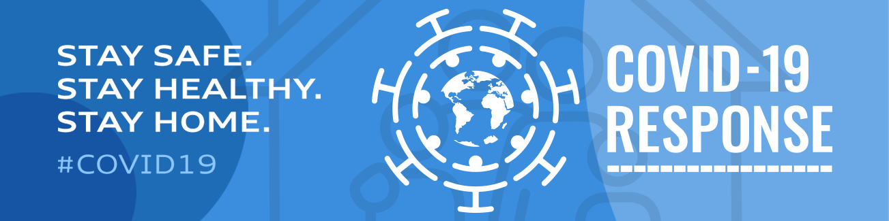
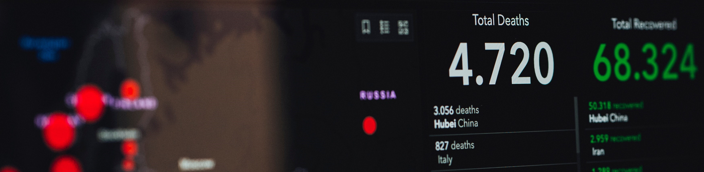

<mat-tab-group mat-align-tabs="center" class="tabs">
  <mat-tab label="Overview">
    
    <div class="container spinner" *ngIf="!fetched">
      <mat-spinner class="spin"></mat-spinner>
    </div>
    <div class="container over" *ngIf="fetched">
      <h1 class="title">Indian Situation</h1>
      <br>
      <div class="row">
        <div class="col-6">
          <h2>Active Cases:</h2>
        </div>
        <div class="col-6">
          <h2>{{cases.active}}</h2>
        </div>
      </div>
      <br>
      <div class="row">
        <div class="col-6">
          <h2>Recovered Cases:</h2>
        </div>
        <div class="col-6">
          <h2>{{cases.recovered}}</h2>
        </div>
      </div>
      <br>
      <div class="row">
        <div class="col-6">
          <h2>Total Cases:</h2>
        </div>
        <div class="col-6">
          <h2>{{cases.total}}</h2>
        </div>
      </div>
      <br>
      <div class="row">
        <div class="col-6">
          <h2>Deaths:</h2>
        </div>
        <div class="col-6">
          <h2>{{deaths.total}}</h2>
        </div>
      </div>
      <br>
    </div>
  </mat-tab>
  <mat-tab label="Precautions">
    <div class="container over">
    <h4>IF YOU ARE FULLY VACCINATED</h4>

    Find new guidance for fully vaccinated people. If you are not vaccinated, find a vaccine and use the guidance below.
    <br>
    <h5>Important Ways to Slow the Spread</h5>
    <br>
    <ul>
      <li>Wear a mask that covers your nose and mouth to help protect yourself and others.</li>
      <li>Stay 6 feet apart from others who don't live with you.</li>
      <li>Get a COVID-19 vaccine when it is available to you.</li>
      <li>Avoid crowds and poorly ventilated indoor spaces.</li>
      <li>Wash your hands often with soap and water. Use hand sanitizer if soap and water aren't available.</li>
    </ul>
    Wear a mask
    Everyone 2 years and older should wear masks in public.
    Masks should be worn in addition to staying at least 6 feet apart, especially around people who don’t live with you.
    If someone in your household is infected, people in the household should take precautions including wearing masks to avoid spread to others.
    Wash your hands or use hand sanitizer before putting on your mask.
    Wear your mask over your nose and mouth and secure it under your chin.
    Fit the mask snugly against the sides of your face, slipping the loops over your ears or tying the strings behind your head.
    If you have to continually adjust your mask, it doesn't fit properly, and you might need to find a different mask type or brand.
    Make sure you can breathe easily.
    Effective February 2, 2021, masks are required on planes, buses, trains, and other forms of public transportation traveling into, within, or out of the United States and in U.S. transportation hubs such as airports and stations.

    Stay 6 feet away from others
    Inside your home: Avoid close contact with people who are sick.
    If possible, maintain 6 feet between the person who is sick and other household members.
    Outside your home: Put 6 feet of distance between yourself and people who don't live in your household.
    Remember that some people without symptoms may be able to spread virus.
    Stay at least 6 feet (about 2 arm lengths) from other people.
    Keeping distance from others is especially important for people who are at higher risk of getting very sick.
    Get Vaccinated
    Authorized COVID-19 vaccines can help protect you from COVID-19.
    You should get a COVID-19 vaccine when it is available to you.
    Once you are fully vaccinated, you may be able to start doing some things that you had stopped doing because of the pandemic.
    Avoid crowds and poorly ventilated spaces
    Being in crowds like in restaurants, bars, fitness centers, or movie theaters puts you at higher risk for COVID-19.
    Avoid indoor spaces that do not offer fresh air from the outdoors as much as possible.
    If indoors, bring in fresh air by opening windows and doors, if possible.
    Wash your hands often
    Wash your hands often with soap and water for at least 20 seconds especially after you have been in a public place, or after blowing your nose, coughing, or sneezing.
    It's especially important to wash:
    Before eating or preparing food
    Before touching your face
    After using the restroom
    After leaving a public place
    After blowing your nose, coughing, or sneezing
    After handling your mask
    After changing a diaper
    After caring for someone sick
    After touching animals or pets
    If soap and water are not readily available, use a hand sanitizer that contains at least 60% alcohol. Cover all surfaces of your hands and rub them together until they feel dry.
    Avoid touching your eyes, nose, and mouth with unwashed hands.
    Cover coughs and sneezes
    If you are wearing a mask: You can cough or sneeze into your mask. Put on a new, clean mask as soon as possible and wash your hands.
    If you are not wearing a mask:
    Always cover your mouth and nose with a tissue when you cough or sneeze, or use the inside of your elbow and do not spit.
    Throw used tissues in the trash.
    Immediately wash your hands with soap and water for at least 20 seconds. If soap and water are not readily available, clean your hands with a hand sanitizer that contains at least 60% alcohol.
    Clean and disinfect
    Clean high touch surfaces daily. This includes tables, doorknobs, light switches, countertops, handles, desks, phones, keyboards, toilets, faucets, and sinks.
    If someone is sick or has tested positive forCOVID-19, disinfect frequently touched surfaces. Use a household disinfectant product from EPA’s List N: Disinfectants for Coronavirus (COVID-19) according to manufacturer’s labeled directions.
    If surfaces are dirty, clean them using detergent or soap and water prior to disinfection.
    Monitor your health daily
    Be alert for symptoms. Watch for fever, cough, shortness of breath, or other symptoms of COVID-19.
    Especially important if you are running essential errands, going into the office or workplace, and in settings where it may be difficult to keep a physical distance of 6 feet.
    Take your temperature if symptoms develop.
    Don't take your temperature within 30 minutes of exercising or after taking medications that could lower your temperature, like acetaminophen.
    Follow CDC guidance if symptoms develop.
    </div>
  </mat-tab>
  <!-- <mat-tab label="Third">Content 3</mat-tab> -->
</mat-tab-group>
